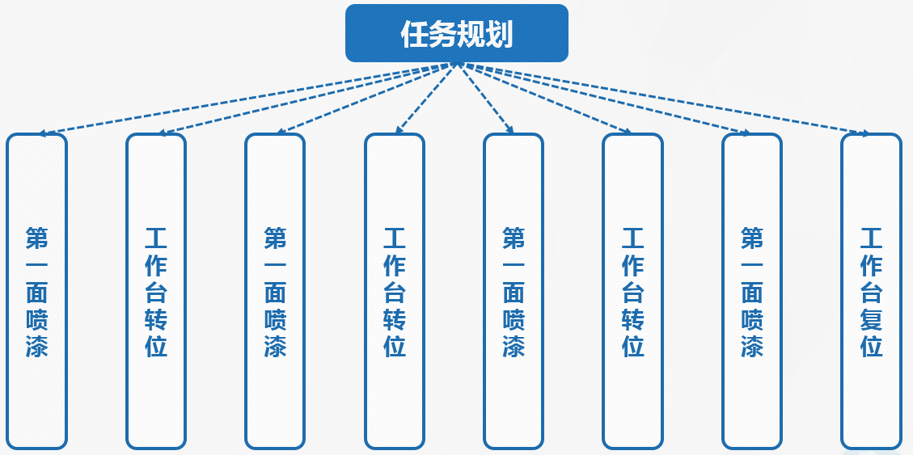
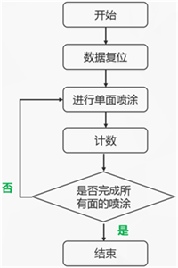
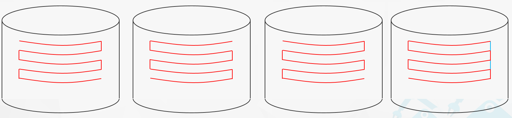

4.1喷漆前的准备
4.1.2运动规划
1、任务规划
机器人喷漆的动作，可分解成为 “拾取物料”、 “上料”、“等待加工完毕并下料”、“将物料放置到托盘”等一系列子任务。可以进一步分解为“把喷枪靠近工件”、“移动吸盘贴近工件”、“打开喷枪”、“沿工件移动喷枪”等一系列动作。

图4-2 任务规划
2、动作循环规划
喷漆作业过程需要对工件四面进行喷漆，各面的喷漆运动轨迹相同，所以只需要编制一个表面的喷漆运动程序，通过条件判断控制工作台转位换面。可设定一个转位计数标志，当工件一面喷漆完成后，工作台转位，同时计数标志加1，机器人回到原点开始喷另一面。当计满四次，表明喷漆完成，输出喷漆结束信号动作循环规划如图4-3所示。

图4-3 喷漆动作循环规划图
3、轨迹规划
单面喷漆作业过程中，喷枪沿着工件表面以圆弧轨迹移动到工件右侧，然后向下移动15mm，再沿着工件表面以相同的圆弧轨迹动到工件左侧，再向下移动固定距离，然后再以相同的圆弧轨迹动到工件右侧。这样循环往复运动五次，完成一个面的喷涂。然后机器人移动到喷涂结束点上方60mm处，以此位置为喷涂开始点进行下一个面的喷涂。运动轨迹如图4-4所示。

图4-4 喷漆循环轨迹图